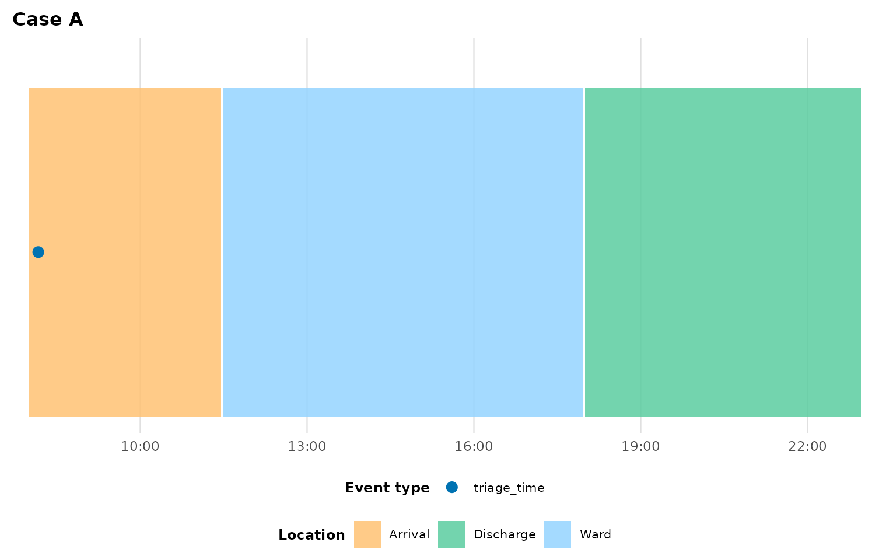

Adapting your data
adapting-your-data.Rmdplot_patient_journey()’s defaults
(case_col = "caseID", time_col = "timestamp",
…) match example_journey’s column names, but your own data
almost certainly uses different ones — and might not even be in the
right shape yet. This vignette covers both problems: matching
column names via a schema, and reshaping wide milestone data into the
long form eventviz expects.
Column-name schemas
You can always pass column names individually:
plot_patient_journey(
my_data, case_id = "12345",
time_col = "ts", case_col = "spell_id", act_type_col = "category",
activity_col = "label", patient_col = "mrn"
)For a dataset you’ll plot repeatedly, bundle the mapping into an
event_log_schema() once and reuse it:
my_schema <- event_log_schema(
time_col = "ts", case_col = "spell_id",
act_type_col = "category", activity_col = "label", patient_col = "mrn"
)
my_schema
#>
#> ── <event_log_schema>
#> time_col: ts
#> act_type_col: category
#> activity_col: label
#> case_col: spell_id
#> patient_col: mrn
#> location_categories: <not set>Pass it as schema = my_schema; any individual argument
you also supply still wins over the schema, and anything
neither supplies falls through to plot_patient_journey()’s
own defaults.
Autodetection
If your column names are already conventional
(timestamp/time,
case_id/spell_id/episode_id,
act_type/event_type,
activity/label,
patient_id/mrn, …), you don’t have to name
them at all. autodetect_schema() matches column names
against built-in candidate lists — exact case-insensitive match first,
then a fuzzy edit-distance match — and resolves roles in a fixed order
so one column is never silently claimed by two roles:
autodetect_schema(example_journey)
#> ℹ Autodetected time_col = "timestamp" (exact match).
#> ℹ Autodetected case_col = "caseID" (exact match).
#> ℹ Autodetected act_type_col = "act_type" (exact match).
#> ℹ Autodetected activity_col = "activity" (exact match).
#> ℹ Autodetected patient_col = "K_Number" (exact match).
#>
#>
#> ── <event_log_schema>
#>
#> time_col: timestamp
#>
#> act_type_col: act_type
#>
#> activity_col: activity
#>
#> case_col: caseID
#>
#> patient_col: K_Number
#>
#> location_categories: <not set>Notice caseID and K_Number were matched
fuzzily even though they don’t exactly match the candidate lists
(case_id, patient_id, …). To use autodetection
inline rather than as a separate step, pass the literal string
schema = "auto" — this is the only way
autodetection runs; a manually-constructed
event_log_schema() never triggers it, and omitting
schema entirely just uses the function’s hardcoded
defaults:
plot_patient_journey(example_journey, case_id = "SP-001", schema = "auto")
#> ℹ Autodetected time_col = "timestamp" (exact match).
#> ℹ Autodetected case_col = "caseID" (exact match).
#> ℹ Autodetected act_type_col = "act_type" (exact match).
#> ℹ Autodetected activity_col = "activity" (exact match).
#> ℹ Autodetected patient_col = "K_Number" (exact match).
If two candidate columns tie for one role, or a required role can’t
be resolved at all, autodetect_schema() aborts naming the
problem rather than guessing — at that point, fall back to an explicit
event_log_schema().
Reshaping wide milestone data
Some source systems export one row per case with a column per milestone timestamp, rather than one row per event:
wide <- data.frame(
case_id = c("A", "B", "C"),
diagnosis = c("Chest pain", "Fall", "Sepsis"),
arrival_time = as.POSIXct(c("2024-01-01 08:00", "2024-01-01 09:15", "2024-01-01 10:00"), tz = "UTC"),
triage_time = as.POSIXct(c("2024-01-01 08:10", "2024-01-01 09:20", "2024-01-01 10:05"), tz = "UTC"),
ward_time = as.POSIXct(c("2024-01-01 11:30", NA, "2024-01-01 13:00"), tz = "UTC"),
discharge_time = as.POSIXct(c("2024-01-01 18:00", "2024-01-01 12:00", "2024-01-02 09:00"), tz = "UTC")
)
wide
#> case_id diagnosis arrival_time triage_time
#> 1 A Chest pain 2024-01-01 08:00:00 2024-01-01 08:10:00
#> 2 B Fall 2024-01-01 09:15:00 2024-01-01 09:20:00
#> 3 C Sepsis 2024-01-01 10:00:00 2024-01-01 10:05:00
#> ward_time discharge_time
#> 1 2024-01-01 11:30:00 2024-01-01 18:00:00
#> 2 <NA> 2024-01-01 12:00:00
#> 3 2024-01-01 13:00:00 2024-01-02 09:00:00pivot_events_longer() reshapes this into the long form
plot_patient_journey() needs, in one call. Name which of
the pivoted columns represent physical location moves via
location_cols (everything else pivoted becomes a point
event by default), and any non-pivoted columns (like
diagnosis here) pass through untouched:
long <- pivot_events_longer(
wide,
case_col = "case_id",
time_cols = c("arrival_time", "triage_time", "ward_time", "discharge_time"),
location_cols = c("arrival_time", "ward_time", "discharge_time")
)
#> ℹ Dropped 1 row(s) with NA timestamp (milestone did not occur for that case):
#> • ward_time: 1 row(s)
long
#> # A tibble: 11 × 5
#> case_id timestamp act_type activity diagnosis
#> <chr> <dttm> <chr> <chr> <chr>
#> 1 A 2024-01-01 08:00:00 location_move Arrival Chest pain
#> 2 A 2024-01-01 08:10:00 triage_time Triage Chest pain
#> 3 A 2024-01-01 11:30:00 location_move Ward Chest pain
#> 4 A 2024-01-01 18:00:00 location_move Discharge Chest pain
#> 5 B 2024-01-01 09:15:00 location_move Arrival Fall
#> 6 B 2024-01-01 09:20:00 triage_time Triage Fall
#> 7 B 2024-01-01 12:00:00 location_move Discharge Fall
#> 8 C 2024-01-01 10:00:00 location_move Arrival Sepsis
#> 9 C 2024-01-01 10:05:00 triage_time Triage Sepsis
#> 10 C 2024-01-01 13:00:00 location_move Ward Sepsis
#> 11 C 2024-01-02 09:00:00 location_move Discharge SepsisTwo things happened automatically:
- Case B’s missing
ward_time(NA) was dropped with a message, rather than becoming a bogus event at a missing timestamp — anNAmilestone means “didn’t happen for this case”, not an error. - Activity labels were derived from the column names by stripping a
trailing timestamp suffix (
_time,_at,_date,_ts,_datetime) and title-casing what’s left:"arrival_time"became"Arrival", not"Arrival Time".
Override either behaviour with
act_type_map/activity_map (named vectors from
a time_cols entry to your preferred value) if the
auto-derived labels aren’t what you want. The result feeds straight into
plot_patient_journey():
plot_patient_journey(
long, case_id = "A",
case_col = "case_id", location_categories = "location_move",
patient_col = NULL
)
Next steps
-
vignette("linear-processes")for processes with no physical locations at all (complaints, tickets, approval pipelines). -
vignette("cohort-analysis")for comparing several cases once your data is in the right shape.